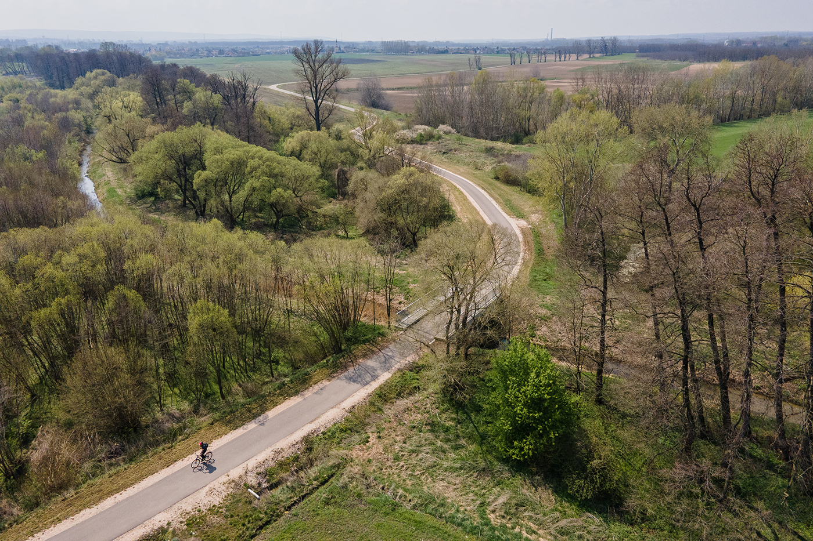

Legnépszerűbb útvonal:
Győr - Ács
- Hossz: 33 km
- Szintemelkedés: alacsony
- Úttípus: nagyrészt kerékpárút
- Nehézség: nehéz
Győri Kerékpáros Túraklub
Görgess le

A 82-es főútat három hétre lezárták, miután a közlekedési hatóságok hatalmas útfelújítást kezdtek. A munkálatok során teljesen kicserélik az aszfaltot és új forgalomirányítást vezetnek be. A lezárás miatt a környező települések közötti közlekedés jelentősen akadályozott.
2024.11.19.
A Győr és Pápa közötti kerékpárút felújításába kezdtek, hogy biztonságosabbá és kényelmesebbé tegyék a két város közötti kerékpáros közlekedést. A projekt során új közlekedési lámpák, pihenőhelyek és táblák kerülnek kihelyezésre. A munkálatok várhatóan négy hónapot vesznek igénybe.
2024.11.11.
A jövő év elején elkezdődik a kerékpárút építése Ikrény és Koroncó között, mely a települések közötti közlekedést biztonságosabbá és kényelmesebbé teszi. A projekt célja, hogy elősegítse a fenntartható közlekedést, és csökkentse az autós forgalmat a környéken.
2024.10.22.